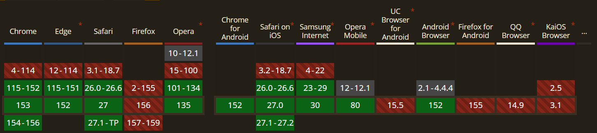

Explication
Animer des éléments lorsqu'ils entrent dans le champ de vision nécessitait historiquement de lourds scripts JavaScript (Intersection Observer). Avec animation-timeline: view(), le navigateur lie nativement la progression d'une animation CSS à la visibilité de l'élément dans sa zone de défilement.
Démo Live
Faites défiler la zone ci-dessous. Les cartes apparaissent en fondu et glissent vers le haut exactement au moment où elles entrent dans la zone visible.
Code CSS
@supports (animation-timeline: view()) {
.reveal-card {
animation: appear linear both;
animation-timeline: view();
animation-range: entry 10% cover 30%;
}
}
@keyframes appear {
from {
opacity: 0;
transform: translateY(50px) scale(0.8);
}
to {
opacity: 1;
transform: translateY(0) scale(1);
}
}Compatibilité et Fallback

Fallback : Le support de cette fonctionnalité étant encore récent, il est impératif d'encapsuler l'appel à l'animation dans une règle @supports (animation-timeline: view()) (comme dans le code ci-dessus). Ainsi, sur un navigateur non compatible, les cartes s'afficheront de manière statique et resteront parfaitement visibles au lieu de rester invisibles.